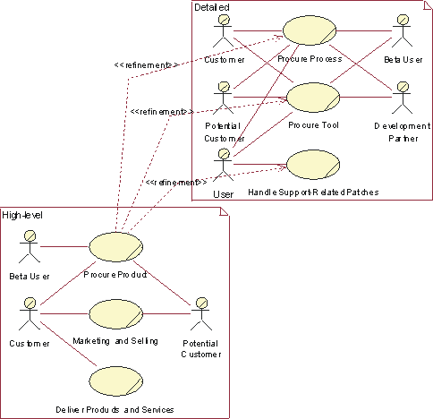
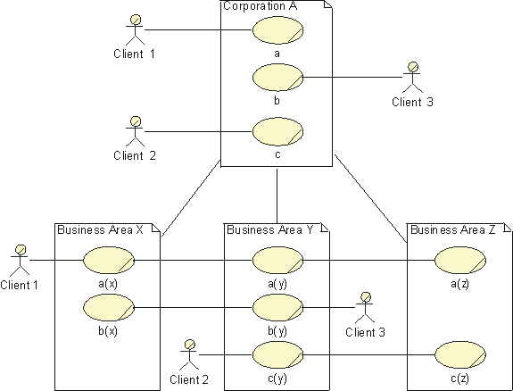
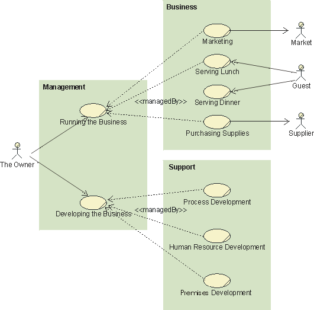

Concepts:
Modeling Large Organizations
Topics
The differences between a small and a large organization lie in the broader
spectrum of products, often within several totally different product families.
Generally the higher the complexity of products, the more distributed the
organization and the market. This results in a larger number of more complex
business use cases, involving many more employees with more specialized tasks.
The techniques proposed here can be applied independently or in combination.
A company’s executive management, as well as its process owners, are
interested in their company’s business models—the management must work with
the company’s strategic objectives, whereas the process owners and leaders
need a detailed picture of how their process should be performed.
If the differences between the executive’s and the process owners’ views
of the organization are too great, you could satisfy their needs by developing
two different, yet related, sets of business use cases, either maintained in one
model or in two separate models; for the executives, a set of high-level
business use cases that shows the intent and purpose of the organization; for
the process owners, a detailed set of use cases that helps clarify how the
organization needs to function internally. For each high-level business use
case, define one, or several, detailed business use cases representing the same
activities in the organization. For example, you can start with the primary
business actor, detail the results and services she is interested in or even
specialize the business actor itself, then develop a separate business use case
for each detailed area.
If you want to engineer your organization one business use case at a time,
you can apply this technique incrementally for one business use case at a time.
First, make a high-level, use-case model of the entire business, and rank the
business use cases in an overview, then identify one or several detailed
business use cases for the most highest ranked, high-level business use
cases.
There is a one-to-one relationship between a high-level business use case and
its set of detailed business use cases. The relationships between business use
cases of the two categories are represented as «refinement» relationships, a
stereotype of dependency. A high-level business use case, and the group of
detailed business use cases it represents, can be presented in the same diagram.

High-level business use cases and detailed
business use cases. The detailed business use cases have been identified by
detailing the results in which the Customer and Potential Customer are
interested.
The technique for modeling business use cases presented so far is most easily
applied to companies that have a single business area and whose business
activities are concentrated geographically at one location. For larger companies
with several geographical distributed over several locations, it may be
necessary to scale up the technique.
Therefore, to model companies built of independent yet cooperating parts, you
can build one superordinate business use-case model that describes the whole
business, and then one subordinate business use-case model for each business
area.
To explore realizations of the superordinate business use cases, you can
identify the organization units and show how they collaborate to perform the
workflow. At this level, an organization unit would correspond to a business
area. It can be useful to use interfaces
at a business level to clarify the collaboration.

Superordinate and subordinate models of an
organization
Each business area can now be treated as an organization on its own,
fulfilling the interfaces defined in the superordinate business object
model.
In software engineering, a technique used to master the complexity of very
large systems is called layering. The idea behind this technique is to separate
the application-specific parts from the more general parts of the system, so
that the program units and program services can be reused. When structuring
organizations, the same principles are often naturally applied. For example, in
the bottom layer you find resources that provide general services, somewhere in
the middle layer you often find resources that support business-specific
activities, and in the top layer you find business area-specific or
product-specific specialists, Research and Development, and sales force
activities. Core business use cases use resources from all layers.
Therefore, layering is not a question of qualifications or seniority, but of uniqueness and importance in relation to the company’s
business ideas. A task handled by a business worker from the general skill layer
could be as qualified as any other. The work in core business use
cases and supporting business use cases where business-specific information
systems, production lines, and other types of business infrastructure are
developed, may require equally business-specific skills from the same layered
organization.
For an explanation of the terms core, supporting, and management business use
case, see Guidelines: Business Use-Case
Model specifically the section on different categories of business use
cases.
Business Use Cases and Classes in a Layered Model
Structuring the organization into layers does not change the business use
case—the same results still need to be produced—but it does change the
business use-case realization.
Compared to a non-layered business object model, a layered business object
model should be developed with two recommended restrictions in mind:
- A business worker in a certain layer never makes contact with a business
worker or manipulates a business entity of a higher layer, except on
explicit request from someone in the higher layer.
- A business worker has responsibilities only within his or her own layer.
Without these restrictions, a layered structure quickly degenerates.
When identifying business workers and assigning activities to business
workers, the required skills needed in order to perform an activity needs to be
understood. A business worker from the layer that organizes resources for those
particular skills must perform an activity that by its nature requires a
particular skill. Instead of having as few business workers as possible, which
is the normal rule of thumb when designing a business use case, you should now
have as few business workers as possible—with as wide responsibilities as
possible—in each layer.
Workflows, business workers, and business entities in lower layers should be
designed with generality in mind to provide services shaped for reuse in several
areas. Business workers and business entities are organized into organization
units according to their business specificity. Organization units that include
the most general competencies and phenomena are found in the bottom layer; while
the most company-specific organization units can be found in the top layer.
Business use-case realizations will, to differing degrees, engage business
workers from different layers. Business use-case realizations, with a high
degree of top-layer involvement, set the profile of the company, should
implement the business idea, and should be the profit centers. These correspond
to core business use cases and supporting business use cases to provide core
business use cases with essential, business-area-specific infrastructure.
Business use-case realizations in lower layers, without top layer business
workers, provide general services required to keep the company running. They can
be abstract and define workflows performed as parts of other business use cases,
for instance, billing activities that conclude a sales business use case. They
can also be concrete, executing on their own and performing activities that do
not need business area-specific competence, like bookkeeping. These normally
correspond to supporting business use cases.
A layered structure reflects those kinds of skills that are key to the
business ideas, whether needed in core business use cases or supporting business
use cases, and which skills are less specific. This could be a good starting
point for systematically analyzing the company‘s available resources.
In many cases, you would only be interested in detailed information about one
or a few of you business processes. However, to give context it can be practical
to identify the complete set of business process, and briefly describe each of
them. This will result in a model that includes core business use cases,
supporting business use cases, and management business use cases. See the
section on different categories of business use cases in Guidelines:
Business Use-Case Model.
Supporting business use cases—such as core business use cases,
business-specific information systems, computer networks, and premises—are
responsible for the development and maintenance of a company’s infrastructure,
among others. From the modeling perspective, there are no real differences
between core business use cases and supporting business use cases. Both types of
business use cases should have the same requirements of usability and
effectiveness. To perform successfully, both kinds of business use cases may
require the same types of resource.
A supporting business use case in one organization, for instance a software
development business use case, might be a core business use case in another. The
major difference is for whom the business use cases work. At the request of a
business owner, the supporting business use cases develop the business in
cooperation with the affected business use case owners and operators. In a model
of the entire business, a typical business actor would be "the Board".
When the modeling is delimited to the supporting business use cases only,
typical business actors are "business use case Owner" and
"business use case Operator".
Management business use cases, on the other hand, are responsible for
managing the business; that is, for running and developing the other business
use cases according to directives from the owner, to initiate and supervise core
business use cases, and supporting business use cases, according to directives
from the owner. The object model describes how executives, resource owners,
business use case owners, business use case leaders, and business use case
operators need to cooperate. Typical business actors are "the Owner"
or "the Board".

A model of an entire organization
At the other end of the scale, there are many minor tasks that need to be
taken care of, like keeping the computer network running, answering the phone,
and cleaning the coffee machine, but these tasks are not part of a defined
business use case. For instance, if you intend to be certified according to the
ISO 9000 standard, these activities need to be included in the model as well. A
straight-forward approach, if it is a full-time job, is to assign such
activities to a specific business worker. If it is less than a full-time job,
assign such activities to an existing business worker with the right skill
requirements without trying to include them in any business use case.
Copyright
© 1987 - 2001 Rational Software Corporation
|  Disciplines >
Disciplines >
 Business Modeling >
Business Modeling >
 Concepts >
Concepts >